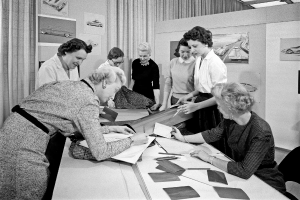

History Design Books + Women

Neat history is conventional history: a focus on the mainstream activities and work of individual, usually male, designers. Messy history seeks to discover, study, and include the variety of alternative approaches and activities that are often part of women designers’ professional lives.
READ MORE
What Did We Lose?

In April 2020, A/D/O—the design incubator-meets-community center-meets-café-meets-design shop—announced its impending closure ostensibly due to the pandemic. Since opening in 2017, the space, an initiative of BMW Mini, had become a community hub in North Brooklyn where you could find local moms having breakfast with their toddlers, writers using the open lobby as an informal coworking area, designers sitting at their permanent desk in A/D/O’s dedicated lab and maker space, and passersby taking photos in front of the building’s latest design installation.
READ MORE
A New Era : Money made Real

In December of 2009, just over a year after the U.S. government passed the $700 billion bank bailout, former Federal Reserve chair Paul Volcker spoke at a conference hosted by the Wall Street Journal.
READ MORE
Art Punks n Liars : The Revolution

Liars have always been concerned with the complete aesthetic. Each of their ten albums has been a multimedia event, often recorded in a different location depending on where the trio set up camp: New York, Los Angeles, Berlin, London.
READ MORE
Maquanna Sallam

Some current news and articles for Gallery. Some current news and articles for Gallery. Some current news and articles for Gallery. Some current news and articles for Gallery. Some current news and articles for Gallery.
READ MORE
Business Acumen or Pop Punk Icon?
During the mid-twentieth century, perhaps no other American company exemplified technological achievement, business acumen, and good design better than IBM.